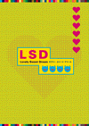

Play Station版 LSD |
PSゲームアーカイブス版 LSD |
|---|---|
| 発売日：1998/10/22 | 発売日：2010/08/11 |
| 発売元：アスミックエンターテイメント | ジャンル：その他のジャンル |
| ジャンル：ドリーム・エミュレータ | 容量：410MB |
| プレイヤー：1人 | 対象年齢：17歳以上 |
| 定価：4800円 | 定価：600円 |
| メモリーカード：１ブロック | スクリーンショット機能対応 |
| 初回特典：「BONUS CD "Lucy in the Sky with Dyanamites"」60分の曲が入ってます | PS3・PSP[PSP-1000シリーズ/PSP-2000シリーズ/PSP-3000シリーズ/PSP-N1000(PSPgo)シリーズ] |
| 夢のゲーム (ゆめのげーむ) | 変なゲーム (へんなげーむ) |
|---|---|
| 「LSD」は、夢をモチーフにしたドリーム・エミュレータです。フィールドをさすらい、様々なキャラクターに出会う。そして気持ちいいとか、気持ち悪いとか、色々なことを感じるためのゲームです。 | 「LSD」はゲームらしくないゲームです。美少女を口説きたい方、悪の魔王をやっつけたい方、ロボットを乗りこなしてみたい方などは、お買い求めにならないほうが無難です。 |
| BGM (びーじーえむ) | ジャケット (じゃけっと) |
| 「LSD」のオープニング・ムービーのBGMを、KENISHII, JIMI TENOR, μ-ziq, MORGAN GEIST, PANTUNES MUSIC, M.P.D., OUT ASS MAOがリミックス。これらの名前にピンときたら、ぜひお買い求めください。 | 「LSD」には7種類のジャケットが封入されています。groovisions, HEX, DJ FOOD, ANDREWSUTTON, MATT ROACH, SEAN BOOTHデザインのジャケットをご覧になりたい方は、ぜひお買い求めください。 |
| 悪夢 (あくむ) | |
| 「LSD」を長時間に渡ってプレイすると、ヘンな気分になることがあります。健康のために、就寝前の30分程度のプレイに抑えておくことを推奨しますが、悪夢にうなされる可能性があります。 |
1日ごとに夢の世界を散歩するゲームです。365日経つとまた1日に戻ります。
夢の世界は荒廃した都市、広大な野原、古い町並みといった様々な雰囲気をもつフィールドによって構成されています。すべてのフィールドをくまなく探索したとき、新たな発見があるかもしれません。
各フィールド間は徒歩だけでなく、壁や柵などの障害物にぶつかると、他のフィールドに行ける「LINK」という移動手段があります。中には、「LINK」でないと移動できないフィールドも存在するとか……。
いろんなフィールドをさまよい、数々のものを見ていくうちに、メニュー画面に"FLASHBACK"という項目が現れます。この"FLASHBACK"はこれまでに見た印象的なシーンをもう一度見ることができます。ただしフィールドに出現する謎の紳士に出会うと、この項目は消えてしまいます。
LSDの2枚組みサントラ。ケンイシイやμ-ziqやJimi Tenorなどが参加。廃盤になっているため、中古でしか入手できません。 Amazonなどで買えますが、Internet Archiveにて無料公開されています。

LSDの夢日記をモチーフに80組のアーティストが制作した豪華作品集。こちらも現在は廃刊になっていて、Amazonなどで中古でしか買えません。